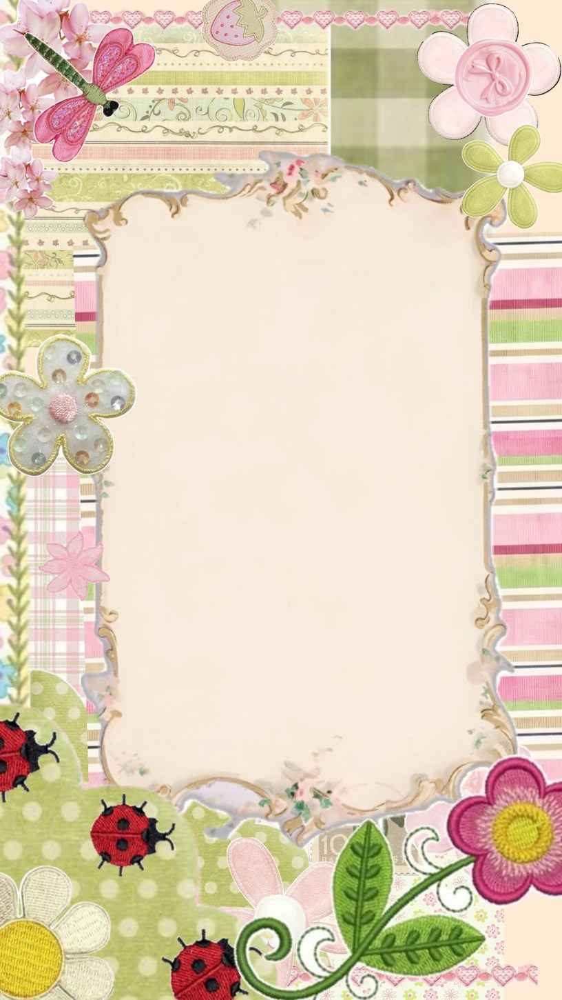
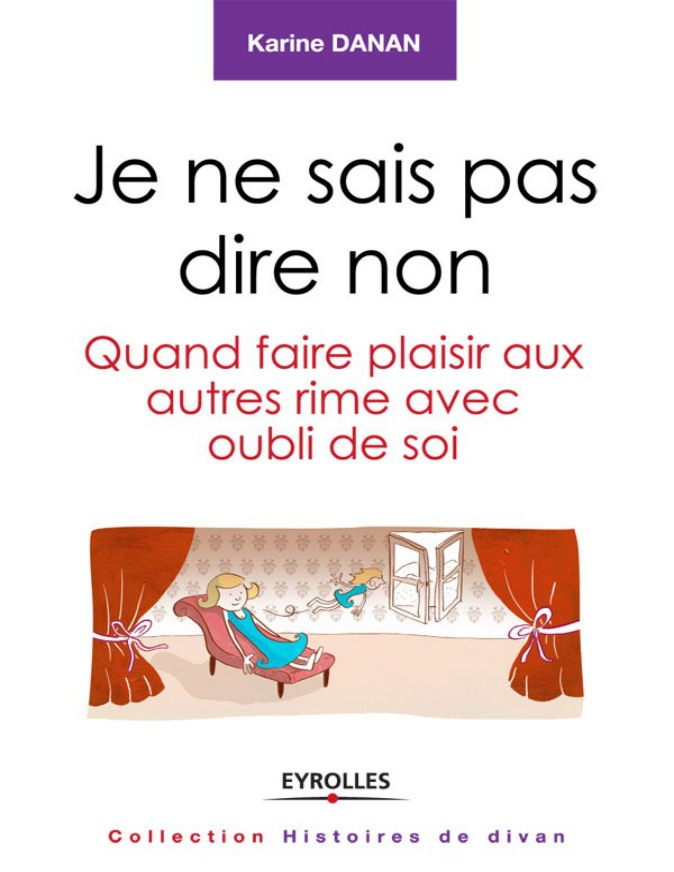

Je ne sais pas dire non…




Carte d’identité
- Auteur
- Karine Danan
- Genre
- Savoirs
- Sous-genre
- Psychologie
- Éditeur
- Eyrolles
- Parution de l’édition
- 10 octobre 2013
- ISBN papier
- 9782212557459
- Langue de l’édition
- Français
- Collection
- Histoires de divan
- Pagination imprimée
- 286 pages
- Fichier du site
- PDF · 195 pages
Première édition française : 10 octobre 2013. Collection Histoires de divan.
Avec la collaboration de Cécile Potel.
 Résumé du livreL’essentiel en quelques lignes
Résumé du livreL’essentiel en quelques lignes
Esther consulte après une séparation. Au fil des séances, elle revient sur sa difficulté à poser des limites au travail et dans ses relations, puis sur des violences longtemps tues. Karine Danan alterne scènes de thérapie et commentaires cliniques pour montrer comment Esther retrouve peu à peu une marge de choix.
 Chapitre par chapitre37 entrées
Chapitre par chapitre37 entrées
-
01 Un collègue prend trop de placePDF p. 16
Après sa séparation d’avec Eliott, Esther revient consulter Hédia. Elle évoque un collègue envahissant et la difficulté à lui opposer une limite.
Lire à cette page ↗ -
02 Dire les choses directementPDF p. 21
Esther revient sur l’échange avec son collègue. Elle s’aperçoit qu’elle attend souvent que l’autre comprenne une limite qu’elle a du mal à formuler.
Lire à cette page ↗ -
03 Les rôles de l’enfancePDF p. 25
En repensant à ses jeux et à la place qu’elle occupait auprès de ses parents, Esther explore son habitude de divertir les autres et de s’adapter à eux.
Lire à cette page ↗ -
04 Les demandes de l’ex-conjointPDF p. 30
Installée dans un nouveau logement, Esther essaie de se réapproprier son espace. Sa relation avec Eliott l’oblige à distinguer ses envies des demandes qu’elle accepte.
Lire à cette page ↗ -
05 Le regard du superviseurPDF p. 35
Hédia parle de son travail avec Jacques, son superviseur. Le dialogue donne à voir les hypothèses qu’elle construit sur Esther et la façon dont elle choisit d’avancer.
Lire à cette page ↗ -
06 Le sentiment de videPDF p. 39
Les réflexions d’Esther sur ses enfants la renvoient à sa propre enfance. Elle commence à parler de son sentiment de décalage et de la honte qui l’accompagne.
Lire à cette page ↗ -
07 Les protections contre l’angoissePDF p. 43
Le commentaire relie plusieurs scènes du récit à une même stratégie d’adaptation. Ce qui a pu protéger Esther enfant peut l’empêcher de se sentir libre à l’âge adulte.
Lire à cette page ↗ -
08 La violence dans la relationPDF p. 47
Une conversation avec Eliott fait apparaître une violence qu’Esther peine à nommer. La séance revient sur ce qu’elle a ressenti et sur les risques auxquels elle est exposée.
Lire à cette page ↗ -
09 La peur de ce qui changePDF p. 52
Esther mesure ce que lui coûte le fait de parler plus librement. Hédia l’aide à observer cette peur et à constater ce qui se passe quand elle exprime son désaccord.
Lire à cette page ↗ -
10 Le cauchemar des vampiresPDF p. 56
Un premier changement dans sa chambre aide Esther à reprendre possession de son quotidien. Elle relie aussi l’évolution d’un cauchemar récurrent à son sentiment de sécurité.
Lire à cette page ↗ -
11 Des places inverséesPDF p. 61
Dans son rapport à sa mère et à son entourage, Esther reconnaît des attentes qui lui font prendre en charge les réactions des autres.
Lire à cette page ↗ -
12 Le souvenir de la pensionPDF p. 64
Un souvenir de pension revient à Esther pendant qu’elle attend sa fille. La distance avec sa famille prend une signification différente au fil de la séance.
Lire à cette page ↗ -
13 Quand les limites disparaissentPDF p. 67
Le commentaire théorique revient sur les liens dans lesquels la place de chacun devient floue. Le texte examine comment la violence et l’intrusion peuvent empêcher Esther de se sentir sujet de sa propre vie.
Lire à cette page ↗ -
14 Un nouveau travailPDF p. 73
Esther présente son changement de poste comme une nouvelle étape. La séance met au jour les ressemblances entre certaines situations qui se répètent.
Lire à cette page ↗ -
15 La crainte du rejetPDF p. 77
Esther s’interroge sur la réaction de ses proches à sa relation avec Marie. Ces questions la ramènent à ce qu’elle a ressenti enfant quand elle ne correspondait pas aux attentes familiales.
Lire à cette page ↗ -
16 Une angoisse envahissantePDF p. 84
Un geste banal au travail déclenche un malaise qui persiste. Hédia aide Esther à prendre au sérieux ce qu’elle ressent et à le mettre en mots.
Lire à cette page ↗ -
17 Mettre fin à la relation avec MariePDF p. 88
Esther annonce la rupture. En revenant sur sa décision, elle envisage qu’elle ait cherché à se protéger d’une proximité devenue difficile à supporter.
Lire à cette page ↗ -
18 L’attachement et la distancePDF p. 91
La rupture amène Esther à revenir sur sa rencontre avec Joshua. Elle distingue la possibilité d’un contact respectueux de la peur de s’engager dans un lien durable.
Lire à cette page ↗ -
19 Des raisons de rester seulePDF p. 95
Hédia laisse Esther choisir ce qu’elle veut aborder. À travers les arguments qu’Esther avance, la séance examine la place que la peur tient dans ses relations.
Lire à cette page ↗ -
20 Le besoin d’appartenirPDF p. 100
Les autrices relient le sentiment d’être de trop au besoin humain de reconnaissance. Le commentaire éclaire les manières dont Esther a tenté de trouver sa place.
Lire à cette page ↗ -
21 Un souvenir qui résonnePDF p. 106
Après l’anniversaire de sa fille, Esther éprouve un malaise difficile à situer. La séance fait le lien entre ses sensations présentes et des expériences anciennes.
Lire à cette page ↗ -
22 Faire une première confidencePDF p. 110
Esther annonce qu’elle a gardé une partie de son histoire pour elle. Hédia l’écoute et lui laisse définir ce qu’elle est prête à dire.
Lire à cette page ↗ -
23 Entendre sans jugerPDF p. 116
La confidence fait naître de la colère chez Hédia. Elle distingue ce qu’Esther se reproche de la responsabilité de la personne qui a abusé d’elle.
Lire à cette page ↗ -
24 Les circonstances de l’abusPDF p. 121
Esther revient sur un souvenir où un cadeau et la dette qu’il semble créer se mêlent. Le récit montre comment elle s’est retrouvée prise dans une situation qu’elle n’avait pas choisie.
Lire à cette page ↗ -
25 Dire l’impossibilité d’échapperPDF p. 126
Esther parvient à raconter une autre scène de violence. Hédia comprend mieux le lien entre ces souvenirs, la peur et les réactions de protection de sa patiente.
Lire à cette page ↗ -
26 Comprendre les effets de l’incestePDF p. 131
Le commentaire examine la culpabilité, la mémoire et le retour des souvenirs dans certaines circonstances. Il propose une lecture clinique de ce que le récit vient de montrer.
Lire à cette page ↗ -
27 Réapprendre ses propres limitesPDF p. 138
Un changement de fauteuil suffit à réveiller chez Esther un besoin de protection. La séance ouvre une discussion sur l’intimité, le corps et l’espace qu’elle peut demander.
Lire à cette page ↗ -
28 Parler avec d’autres victimesPDF p. 142
Esther participe à un groupe de parole et envisage de devenir bénévole. Elle découvre des parcours différents du sien et un endroit où son vécu peut être entendu.
Lire à cette page ↗ -
29 Se reconnaître victimePDF p. 147
Esther fait avancer le projet d’avoir sa propre maison. En parallèle, le groupe et la thérapie l’aident à nommer ce qu’elle a subi sans réduire sa vie à cet événement.
Lire à cette page ↗ -
30 Se voir autrementPDF p. 151
Esther observe une manière nouvelle de ressentir et de regarder son histoire. La séance fait revenir l’image de l’enfant qu’elle a été et les émotions qui y sont liées.
Lire à cette page ↗ -
31 Un appel de la mèrePDF p. 155
Un appel familial touche Hédia elle-même. Le récit ouvre un écho entre les liens que la thérapeute connaît dans sa vie et ceux qu’Esther explore en séance.
Lire à cette page ↗ -
32 Le rôle du groupe de parolePDF p. 159
Le commentaire revient sur l’appartenance, la reconnaissance et la possibilité de parler d’un traumatisme auprès de personnes qui ont vécu des situations voisines.
Lire à cette page ↗ -
33 Faire place à une rencontrePDF p. 164
Esther parle de nouvelles responsabilités et d’une rencontre. Elle se confronte à la fois au regard de son entourage et à sa propre envie de prendre des risques.
Lire à cette page ↗ -
34 Refuser d’être traitée comme un objetPDF p. 171
Esther revient sur les soins et la tendresse dont elle aurait eu besoin enfant. Cette prise de conscience l’aide à formuler ce qu’elle attend d’une relation adulte.
Lire à cette page ↗ -
35 Accueillir une nouvelle rupturePDF p. 175
Après la rupture avec Matthias, Esther exprime une douleur vive. Le travail avec Hédia lui permet de reconnaître la valeur de l’expérience qu’elle a tentée.
Lire à cette page ↗ -
36 Faire le point sur la thérapiePDF p. 181
Esther et Hédia reviennent sur le chemin parcouru. Esther décrit ce qu’elle peut maintenant nommer et les choix qu’elle fait avec davantage de liberté.
Lire à cette page ↗ -
37 Retrouver une capacité d’agirPDF p. 187
Le dernier commentaire revient sur le corps comme frontière et protection. Il relie cette expérience à la possibilité pour Esther de se donner une place et de poser ses limites.
Lire à cette page ↗
Les fils du livre

Les étoiles venues d’ailleurs
Fnac — avis clients
Lire les avis sur Fnac ↗Relevé du 11 novembre 2026
Mon carnet de lecture
Mes étoiles
0 critique
Ma critique sur ce livre ↗Les sources et références ↘
- Eyrolles — présentation, sommaire et bibliographie ↗
- PDF fourni · contenu et mentions éditoriales ↗
- Source de la note extérieure ↗ · Fiche du livre broché ; l’avis peut être rattaché à un autre format par la plateforme.